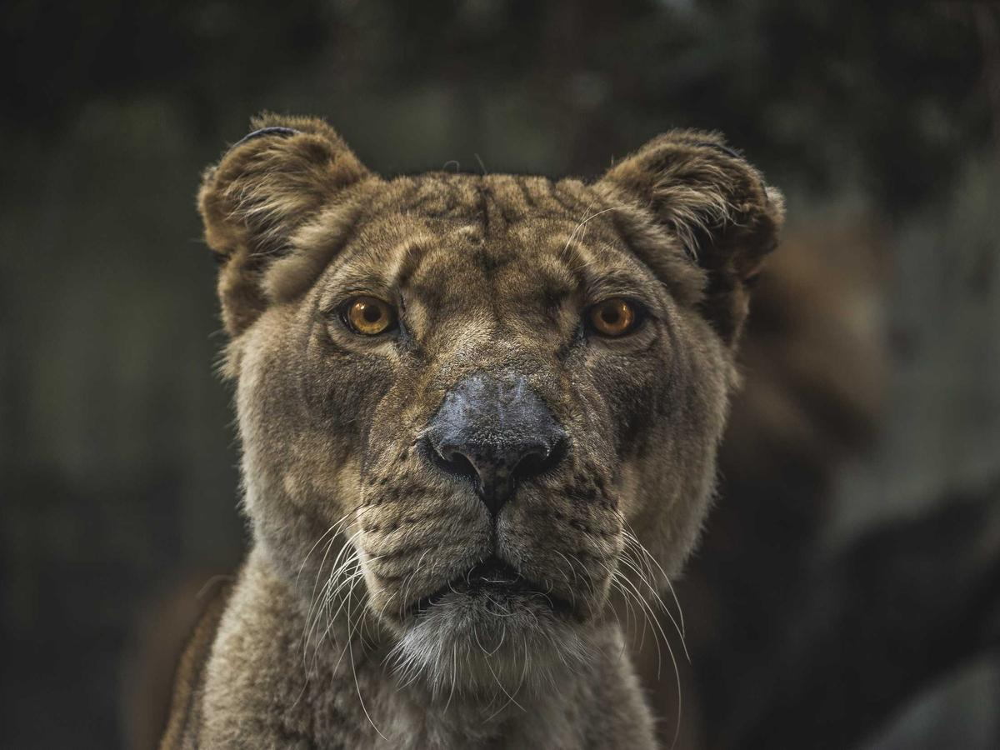
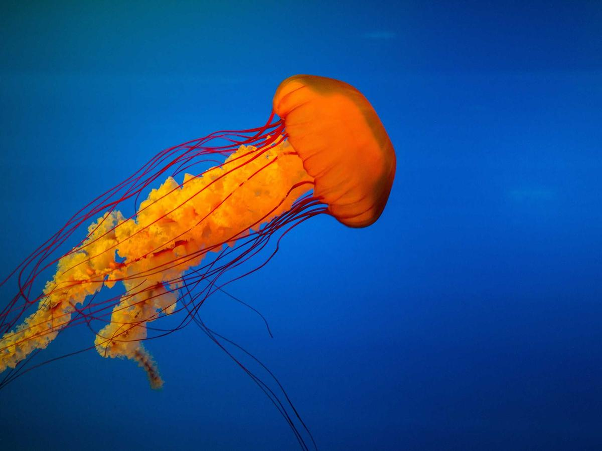
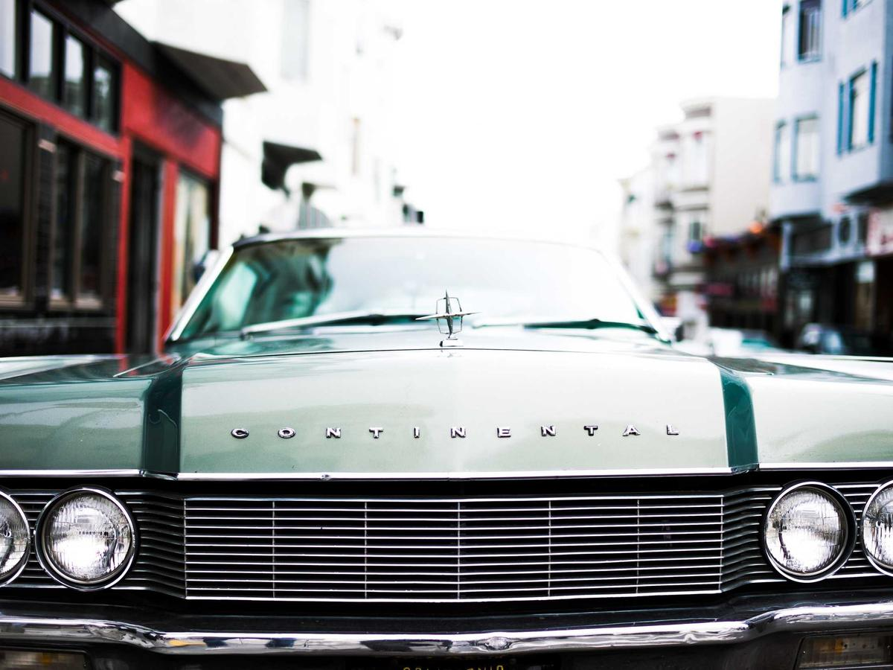
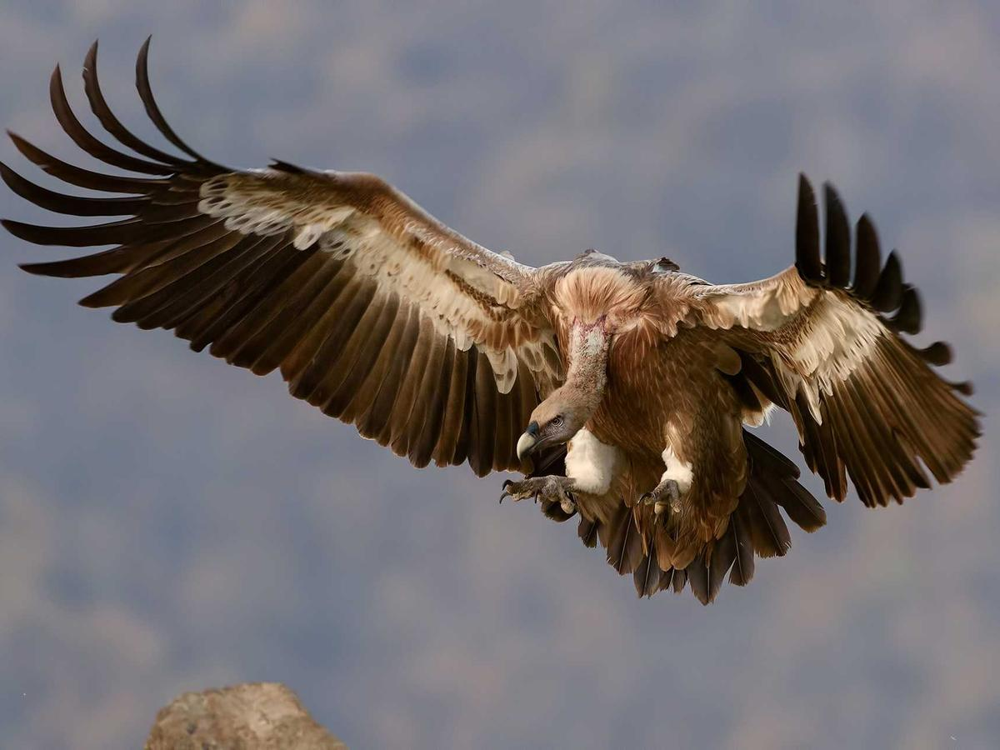
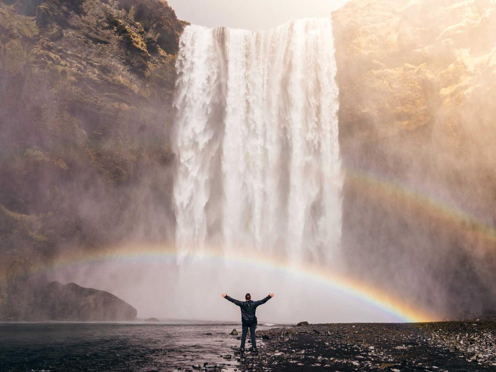
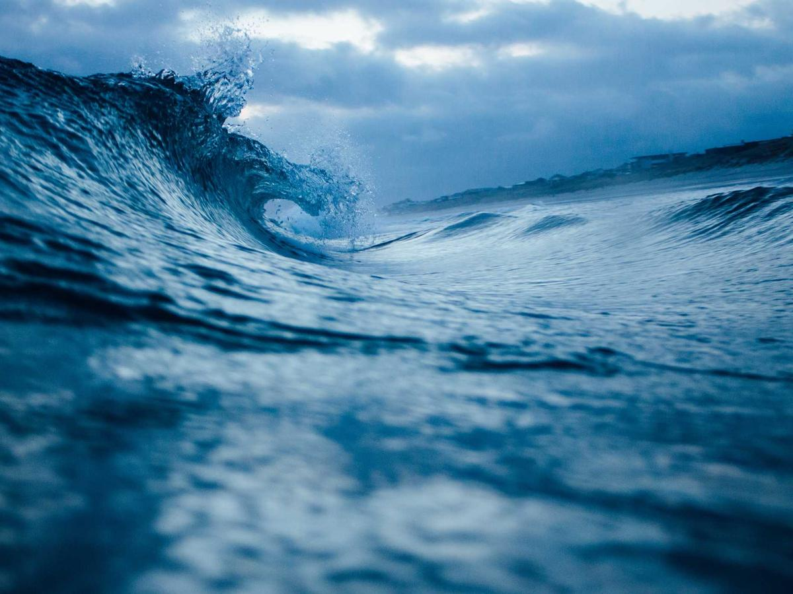
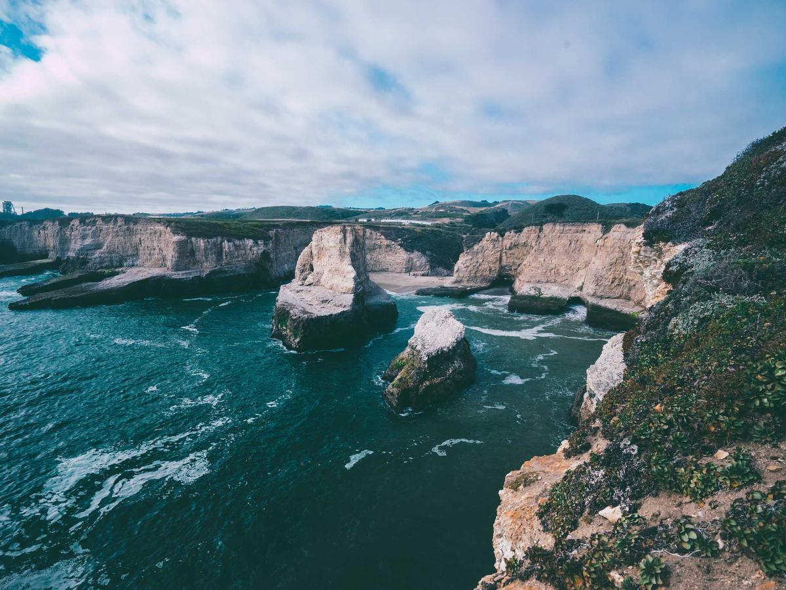

Lioness Kenya Strawberries Market stall
Strawberries Market stall
 Glass Tower Downtown
Glass Tower Downtown

Drifting Open water Fjord Overlook Norway
Fjord Overlook Norway

Parked Old town
In Flight Highlands
Chasing Rainbows Skógafoss
Break Open sea
Where Land Ends Coastline